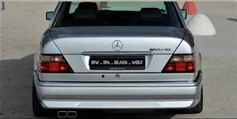
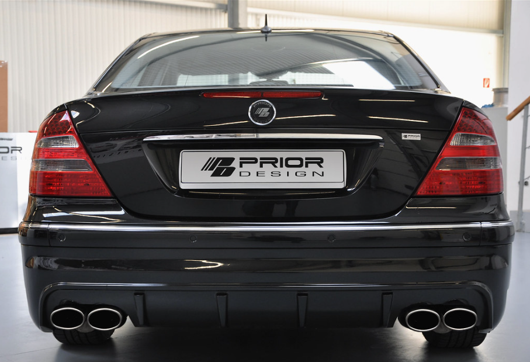

Audio Motor V12 Mercedes-Benz W124  Tu navegador no soporta el elemento de audio Motor V8 Mercedes-Benz W210 Tu navegador no soporta el elemento de audio Motor V8 Mercedes-Benz W211  Tu navegador no soporta el elemento de audio